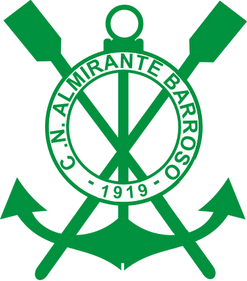
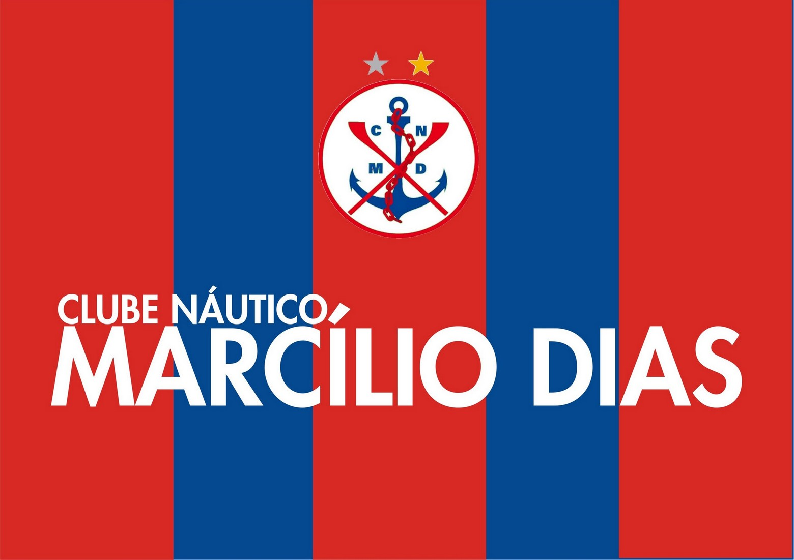
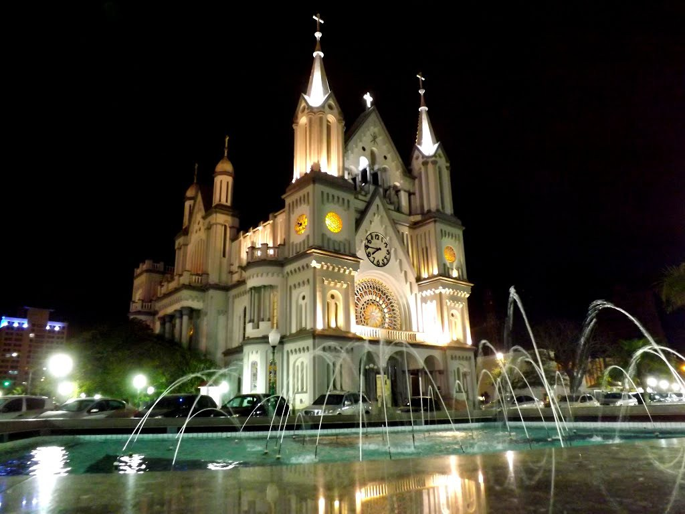

Clube Náutico Almirante Barroso

Clube Náutico Marcílio Dias


O Marcílio foi o quinto clube náutico a ser fundado em Santa Catarina. Antes do Rubro-Anil existiam apenas Riachuelo, Martinelli e Florianópolis (depois rebatizado como Aldo Luz), da Capital do Estado, e o Lauro Carneiro, de Laguna. O primeiro presidente foi Ignácio Mascarenhas Passos, que no dia 16 de abril de 1919 enviou, através de uma carta ao Governador do Estado, Dr. Hercílio Luz, a comunicação da criação do clube.
A história do Barroso começa em 1919, e tem uma relação íntima com o mar e os rios que abraçam Itajaí. O Clube foi fundado no dia 11 de maio, em reunião no “Grande Hotel” com cerca de 40 sócios para a prática do remo. A pedra fundamental da primeira sede foi lançada exatamente no dia 29 de junho de 1919 e era localizada na Rua Pedro Ferreira. A inauguração aconteceu pouco depois, em 1920, onde os atletas se reuniam para confraternizações e práticas esportivas. A competente equipe de remo ficou no topo dos campeonatos estaduais nos anos de 1920, 1921, 1927 e 1928.
Igreja Matriz do Santíssimo Sacramento é o maior monumento artístico e cultural da cidade de Itajaí, Santa Catarina, verdadeiramente seu cartão postal. A Igreja Matriz foi inaugurada em 15 de novembro de 1955 e a sua conclusão devido ao trabalho e dedicação do então vigário Monsenhor Vandelino Hobbold. A pedra fundamental foi lançada em 1940 pelo vigário Pe. José Locks, segundo o projeto do arquiteto alemão Simão Gramlich, o construtor de inúmeras igrejas catarinenses. Seus frontais atingem 50 metros de altura. Na sua construção foram utilizados 700 mil tijolos, artisticamente organizados numa área de 30 metros de largura por 60 metros de comprimento.